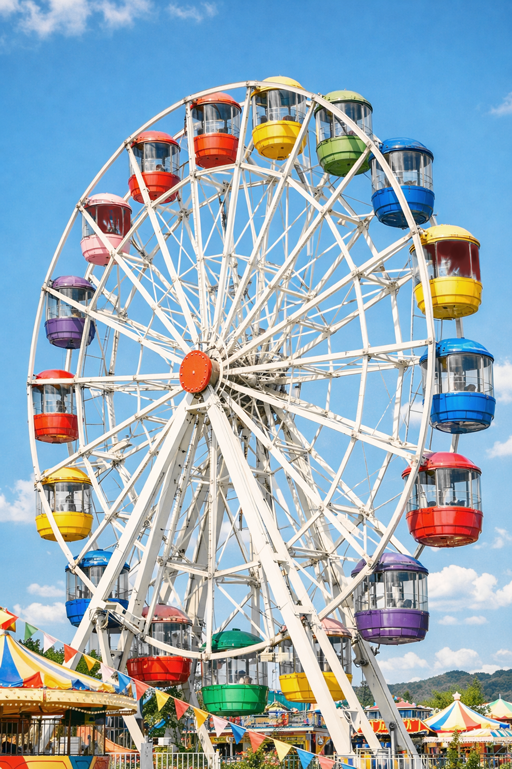
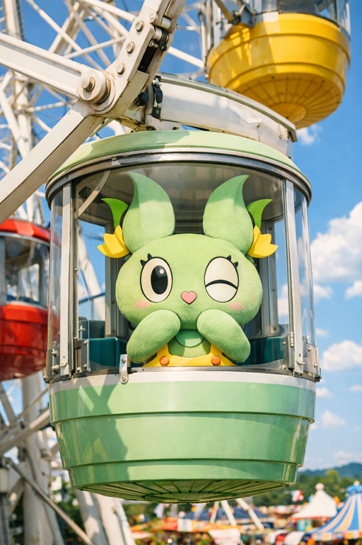

くさかべ観覧車


園内を一望できる大観覧車。 ゆっくりと回るので、家族連れやカップルにもおすすめです。 夜にはライトアップされ、幻想的な雰囲気を楽しめます。
特徴
- 高さ：50m
- 所要時間：約15分
おすすめポイント
観覧車のゴンドラからは、園内だけでなく周辺の景色も楽しめます。 晴れた日には遠くの山々や街並みも見渡せます。 夜景を楽しむなら、夕方から夜にかけての時間帯がおすすめです。


園内を一望できる大観覧車。 ゆっくりと回るので、家族連れやカップルにもおすすめです。 夜にはライトアップされ、幻想的な雰囲気を楽しめます。
観覧車のゴンドラからは、園内だけでなく周辺の景色も楽しめます。 晴れた日には遠くの山々や街並みも見渡せます。 夜景を楽しむなら、夕方から夜にかけての時間帯がおすすめです。